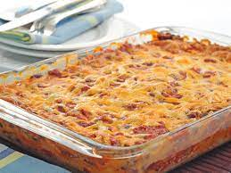

Mexican Casserole

Description
This Mexican casserole is easy to make and very tasty. I often substitute with ground turkey and low-fat dairy products, and it's still delicious! Serve this casserole with chips, salsa, and green salad.
Ingredients
- 1 can of red enchilada sauce
- 1 can cream of chicken
- 4 tortillas
- 1 lb of ground turkey
- i can of refried beans
- cheese
Steps
- Preheat oven to 350 degrees
- cook the ground turkey on a pan
- Mix enchilada sauce with cream of chicken
- Spray the casserole dish and put a little of the sauce mixture at the bottom
- Cut or tear your tortillas to fit and then dip them into the sauce mixture and add to the dish
- Put half the can of beans on top and spread out
- spread half the meat on top
- sprinkle cheese and repeat each step until you have 2 layers
- top with cheese
- Cover foil and cook for 20 minutes
- remove foil and cook for 5 more minutes
- Serve and enjoy with tortilla chips